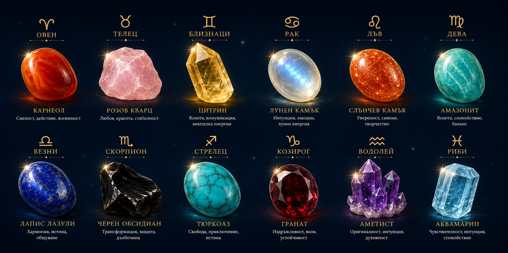

.svg)
Кристалите и Зодиите
От Нагръдника на Аарон до модерната астрология
Връзката между астрологията и минералите не е съвременна Ню Ейдж измислица, а практическо и символично съчетание с хилядолетна история. Свързването на определени скъпоценни камъни със зодиакалните знаци обединява естествените свойства на минералите с астрологичния символизъм.
Откъде води началото си тази връзка?
Историческите корени на зодиакалните камъни датират още от античността. Основен исторически източник е описанието на Нагръдника на Аарон в библейската книга „Изход". Този свещенически атрибут е съдържал 12 различни скъпоценни камъка, представляващи 12-те израилски племена.
През I век историкът Йосиф Флавий, а по-късно и свети Йероним (V век), правят пряка връзка между тези 12 камъка, 12-те месеца в годината и 12-те зодиакални съзвездия. В древността хората не са притежавали един статичен камък за цял живот, а са носели съответния кристал според периода от годината. Традицията всеки човек да има определен камък според рождената си дата се оформя много по-късно — през XVIII век в Полша, благодарение на навлизането на европейското бижутерийно изкуство.
Каква е логиката зад тази съвместимост?
В класическата и модерната астрология всеки знак се свързва с конкретни архетипи, стихии (Огън, Земя, Въздух, Вода) и характерни качества. Минералите от своя страна притежават уникален химичен състав, цвят и кристална структура. Свързването им разчита на психологически и символичен механизъм:
Акцентиране на силните страни: използване на камък, който символизира водещите свойства на знака (например карнеол за енергията на Овена или цитрин за фокуса на Близнаците).
Балансиране на крайностите: избор на кристал, чиято символика носи спокойствие в области, където знакът е склонен към пренапрежение.
Основни зодиакални камъни и тяхното значение
Ето кои са традиционно приетите минерали за всеки зодиакален знак и тяхната символика:

| Знак | Основен кристал | Символично значение |
|---|---|---|
| ♈ Овен | Карнеол | Смелост, действие, жизненост |
| ♉ Телец | Розов кварц | Любов, красота, стабилност |
| ♊ Близнаци | Цитрин | Яснота, комуникация, ментална енергия |
| ♋ Рак | Лунен камък | Интуиция, емоции, лунна енергия |
| ♌ Лъв | Слънчев камък | Увереност, сияние, творчество |
| ♍ Дева | Амазонит | Яснота, спокойствие, баланс |
| ♎ Везни | Лапис лазули | Хармония, истина, общуване |
| ♏ Скорпион | Черен обсидиан | Трансформация, защита, дълбочина |
| ♐ Стрелец | Тюркоаз | Свобода, приключение, истина |
| ♑ Козирог | Гранат | Издръжливост, воля, устойчивост |
| ♒ Водолей | Аметист | Оригиналност, интуиция, духовност |
| ♓ Риби | Аквамарин | Чувствителност, интуиция, спокойствие |
Свързването на кристалите със зодиака е само началото на тяхното практическо приложение. Извън символиката и астрологичните асоциации съществуват структурирани методи за поддръжка, почистване и фокусирана работа с минерали — тема, позната като кристалотерапия, върху която ще подготвим отделен подробен материал.